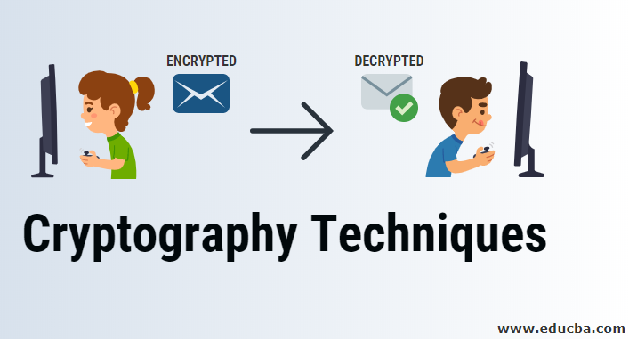

Types of cryptographic techniques page
links:

Symmetric-key Cryptography :
Both the sender and receiver share a single key. The sender uses this key to encrypt plaintext and send the cipher text
to the receiver. On the other side the receiver applies the same key to decrypt the message and recover the plain text.
Public-Key Cryptography :
his is the most revolutionary concept in the last 300-400 years. In Public-Key Cryptography two related keys
(public and private key) are used. Public key may be freely distributed, while its paired private key, remains a secret.
The public key is used for encryption and for decryption private key is used.
Hash Functions :
No key is used in this algorithm. A fixed-length hash value is computed as per the plain text that makes it impossible for
the contents of the plain text to be recovered. Hash functions are also used by many operating systems to encrypt passwords.